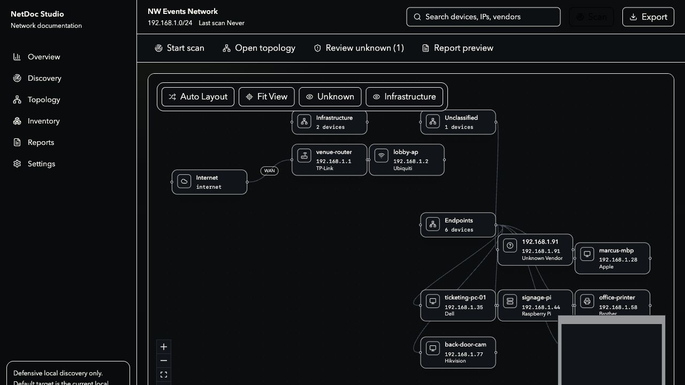

01
Discover local devices
Detect the active interface, parse ARP, run a rate-limited ping sweep, and use optional tools only when the user enables them.
NetDoc Studio turns local discovery, device review, topology, and PDF reporting into one calm desktop workflow for small businesses, venues, homelabs, and MSP technicians.
Preview build for macOS Apple Silicon. Only scan networks you own or have permission to document.
Less dashboard noise, more technician flow. Start with a local subnet, identify what needs review, then leave behind documentation someone can actually use.
Detect the active interface, parse ARP, run a rate-limited ping sweep, and use optional tools only when the user enables them.
Label hostnames, roles, vendors, unknown devices, infrastructure notes, and confidence gaps before exporting anything client-facing.
Generate a PDF report pack with summary, topology, inventory, vendor breakdown, and a technician action plan.
The scan is only the beginning. NetDoc Studio is designed around the deliverable: a readable map, a reviewed inventory, and a report that makes the next step obvious.

Create a project, run local discovery, review devices, open the topology canvas, and export a PDF report. The build is early, but the workflow is already usable.